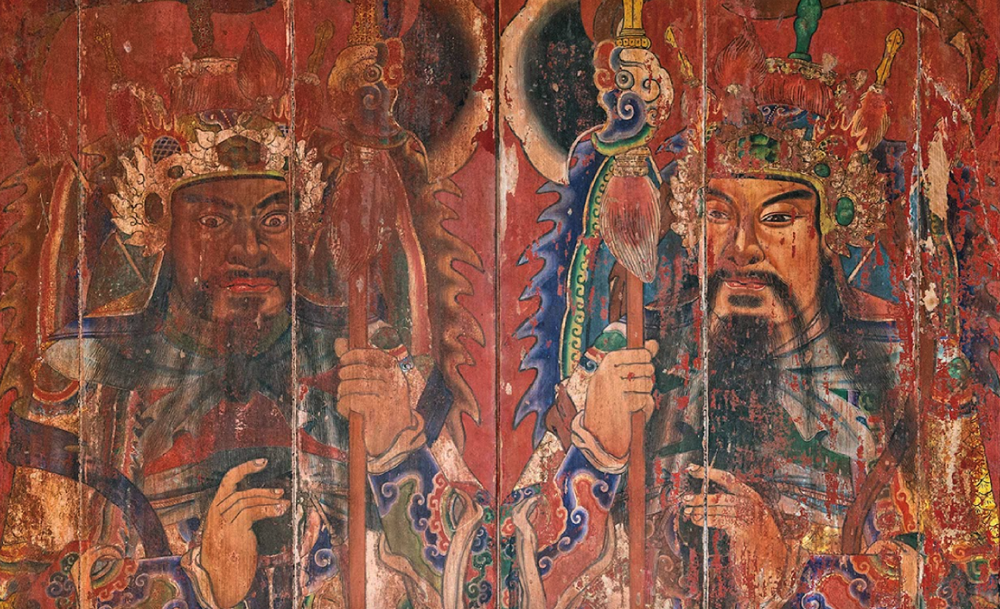

|圖為修護前的門神|
陳德聚堂門神彩繪由畫師 陳玉峰 於 1961 年修建時創作，後因病逝，其作品成為他彩繪生涯晚期的代表作之一。
1982 年重修時門神被塗上紅漆，1997 年再修護時由潘岳雄藝師另繪新門神。原門神移至庫房，直到2007 年才再度取出，回到陳德聚堂。
此兩座中門門神為陳玉峰的晚期創作，具有高度藝術與文化價值。
更因為從陳德聚堂找到的收據與壁畫落款中發現，陳玉峰老師幾乎是以寄附的形式為陳德聚堂奉獻藝術，他的名字出現於陳德聚堂譜系圖中，作為陳家裔孫，其意義更勝藝師與祠堂，多了一份落葉歸根的想望。
時至2022年封存於陳德聚堂廂房因年久出現髒污、剝落、裂痕與紅漆覆蓋等問題，因此於2023年6月將這兩件中門門神「神荼」、「鬱壘」捐贈給臺南文化資產管理處進行修復。
為延長門神的文物保存年限與藝術價值，委託臺南藝術大學吳盈君老師帶領的團隊進行修復，以清潔、去除紅漆與穩定彩繪層與基底的加固保護的工作為主，保留當初陳玉峰繪製真實色彩與筆觸，無過度修飾，盡可能還復當時門神的光彩。